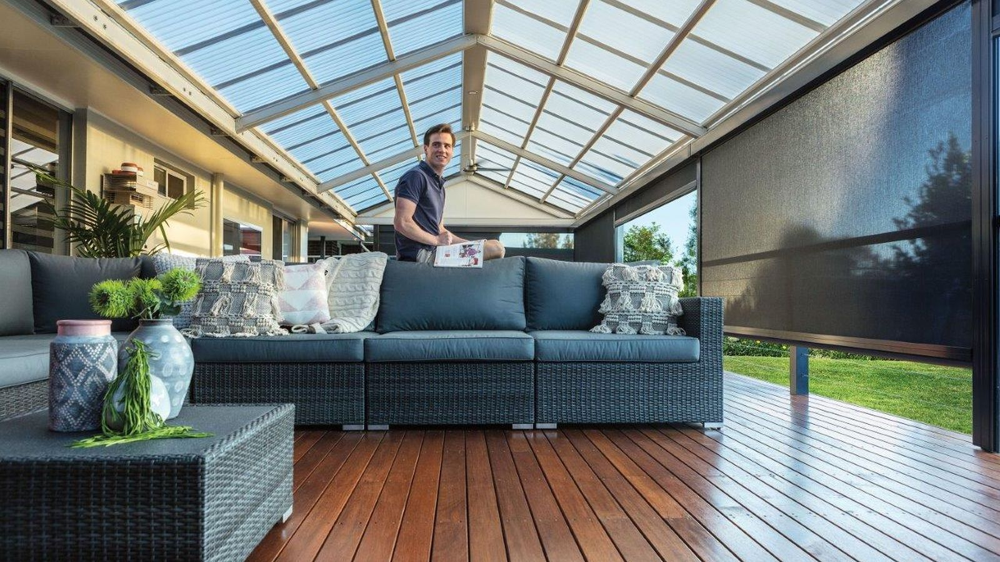

Pergolas
How to fit outdoor blinds to a pergola
How to fit outdoor blinds to a timber, steel or aluminium pergola — where to mount the headbox, how to handle louvre and flat roofs, and closing the gaps.
7 min read
A well-made outdoor blind lasts years, not seasons. How many years depends on the fabric, the sun it faces and how it is treated.

Short answer: A quality outdoor blind in typical Australian conditions commonly lasts somewhere around 5 to 15 years. Clear PVC tends to be at the shorter end, quality mesh and track hardware at the longer end. The fabric usually wears out before the hardware, and harsh sun, coastal air and being left down in strong wind shorten every figure.
Lifespan is one of the hardest things to give a single number for, because the same blind can last twice as long on a sheltered south-facing verandah as on a west-facing deck by the beach. What we can say is which parts age, why, and what speeds that up.
Almost always the fabric. The aluminium headbox, tracks and bottom bar are powder-coated metal and outlast the fabric in most installations. Springs, cords and motors sit in between.
| Component | How it ages | Relative lifespan |
|---|---|---|
| Clear PVC | Clouds, yellows and stiffens with UV; can crack at folds | Shortest |
| Mesh fabric | Fades; edges and welds can fray over time | Medium to long |
| Ropes, cords, straps | Fray and lose strength in UV | Short to medium; easy to replace |
| Springs and motors | Lose tension; motors can fail electrically | Medium to long |
| Powder-coated aluminium | Chalks or corrodes slowly, faster near the coast | Longest |
That ordering is useful: when an older blind starts to look tired, it is often the fabric alone that needs replacing, not the whole system.
Australian sun is the biggest single factor. A blind facing west or north takes far more UV than one facing south. PVC is the most UV-sensitive material; mesh holds up better but still fades.
Leaving a blind down in a strong wind puts load through the fabric, welds and fixings. Track-guided blinds handle wind better than unguided ones, but every outdoor blind lasts longer if it is raised in high winds.
Salt accelerates corrosion on fixings and hardware. Stainless fixings and regular rinsing make a real difference within a few kilometres of the sea.
Rolling a wet blind and leaving it rolled for days invites mould. Grit trapped in the roll abrades the fabric every time it runs.
Tracks that are out of parallel make the fabric rub. A headbox that is not level makes the fabric track to one side. Both wear the edges early.
Warranties vary between manufacturers and are usually split by component — the fabric, the hardware and any motor often have different periods. When comparing, check:
Australian Consumer Law also gives you guarantees that apply on top of any manufacturer's warranty. The ACCC website explains how these work.
Yes. A track-guided blind holds its fabric flat in the tracks, so it takes less flapping and creasing than a rope-and-pulley or café blind, whose fabric is free to move in the wind. That flexing is what cracks PVC and loosens stitching over time. Café blinds that are strapped and unstrapped daily also wear at the strap points.
Motorised blinds add an electrical component that can fail independently of the fabric, but they are often treated more gently than manual blinds, because they raise and lower at a steady speed and can be put on a wind sensor that retracts them automatically.
It does. In the southern hemisphere, north- and west-facing openings get the most sun and heat, with west faces taking the harsh afternoon sun. South-facing blinds see far less UV. If you are choosing fabrics for several sides of an enclosure, it is reasonable to put your most durable fabric on the west and north faces.
If the hardware is sound and only the fabric is failing, ask about refabricating — replacing the fabric on the existing roller and tracks. It costs considerably less than a new blind.
Usually. The labour of measuring, ordering and installing is the same whether a blind lasts six years or twelve, so a better fabric and hardware spreads that effort over more years of use. A blind that needs replacing half as often is often the cheaper blind over its life, even if it costs more on day one.
The exception is a space you only use occasionally, or a blind on a sheltered south-facing side that will never see much sun. There, a standard fabric may last as long as you need it to, and the premium buys you little.
Commonly somewhere around 5 to 15 years, depending on the fabric, sun exposure, wind and maintenance. Clear PVC tends to have the shortest life, while quality mesh and aluminium hardware last longer.
Clear PVC is the most UV-sensitive outdoor blind material and is usually the first to need replacing. It gradually clouds and stiffens, faster on north- and west-facing openings.
Often, yes. If the headbox, tracks and roller are in good condition, the fabric can be replaced for considerably less than the cost of a new blind.
They can if they are left down in strong wind. Track-guided blinds cope better than unguided ones, but raising any blind in high winds is the best way to avoid damage.
It varies by manufacturer, but exclusions commonly include wind damage while the blind was down, incorrect installation and lack of maintenance. Read the warranty terms before you buy.
Pergolas
How to fit outdoor blinds to a timber, steel or aluminium pergola — where to mount the headbox, how to handle louvre and flat roofs, and closing the gaps.
7 min read
Balconies
Outdoor blinds for apartment balconies: getting strata or body corporate approval, choosing a blind that copes with wind at height, and fixing into concrete.
7 min read
Approvals
When outdoor blinds need council, heritage, bushfire or strata approval in Australia, when they usually don't, and how to check before you order.
6 min read
Every outdoor blind, awning and roller shutter we make, with fabric and colour options, on the main DIY Blinds store.
View all products